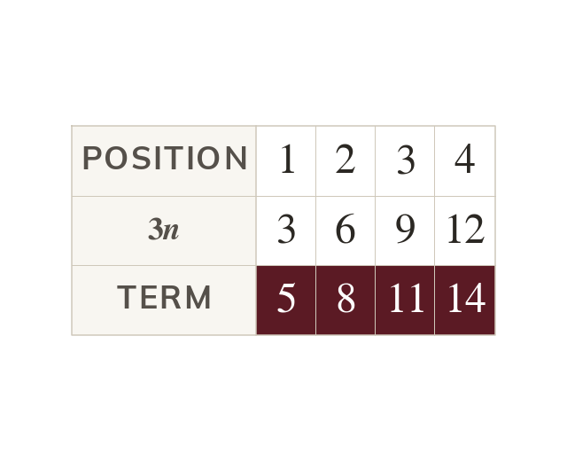
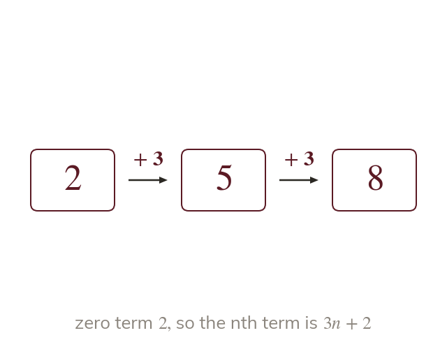
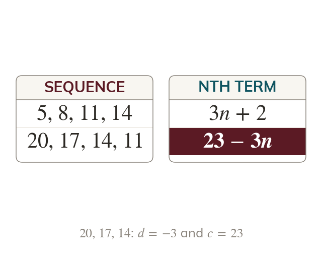
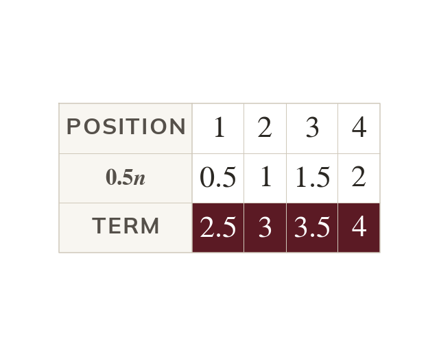
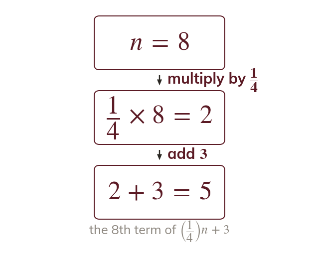

The difference goes in front of n
The common difference is the number in front of Terms rising by sit a fixed amount above
Given a few terms, the nth term is the shortcut to every other: the 100th term, or whether appears at all. Two numbers, d and c, are all it takes.
Work down the page at your own pace. Write every answer in your book first, then click to check it.
Read each card, then follow the worked examples one step at a time.

The common difference is the number in front of Terms rising by sit a fixed amount above

Working back one step from the first term gives c. So c is the first term minus d.

A decreasing sequence has a negative Its nth term is usually written constant first.
Pick an answer. If it's wrong, the feedback tells you which mistake it was.
Read each card, then follow the worked examples one step at a time.

The common difference need not be a whole number. The same method still finds d and c.

A coefficient of multiplies the position by
Then c is added as before.
Pick an answer. If it's wrong, the feedback tells you which mistake it was.
Finished? Next lesson: 10H.1.3 The Formula for the nth Term.
Log in, then search for a code to practise that skill.
Videos, worksheets and more on each part of this lesson.